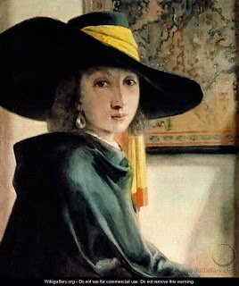

Chullin 84 - The Mitzvah to Cover the Blood
The Torah said, " One... who traps a wild beast or a fowl and spills its blood by slaughtering it in a kosher way must cover its blood with earth ." Thus the mitzvah of covering the blood applies in the Land of Israel and outside, in the time of the Temple and now; however it applies only to regular animals and not to sacrifices, and only to wild beasts and fowl, but not to domestic animals. The "koy" animal is special : one should not slaughter it on a festival, and if he did, he should not cover its blood, so as not to dig in the earth.
Why did the Torah mentioned "trapping," since fowl don't need to be trapped? To teach that one should eat meat only occasionally, as if he had to trap it each and every time. Additionally, one should only eat meat if he has a great desire for it , has flocks, or is otherwise rich. Others should eat it only on Shabbat. However, later generations became weaker and should eat whatever is necessary to maintain their health.
One should underspend on himself, be within means for his children, and overspend on his wife.
Art: Jan Vermeer Van Delft - Young Girl in an Antique Costume